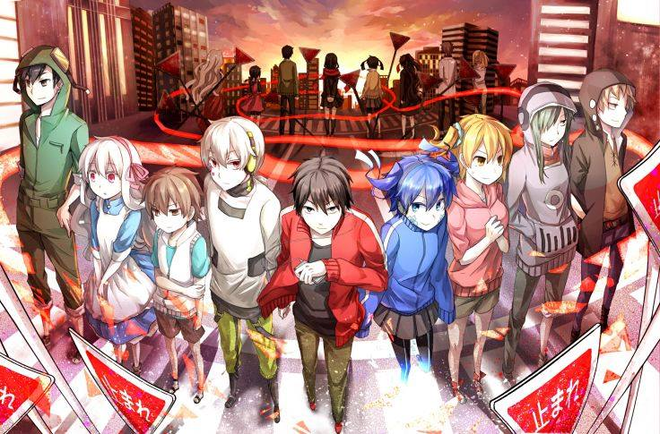

Dengan Cerita yang Berkesan
Beberapa Anime Dengan Cerita yang Berkesan
Hai Friends Anime Lovers, sekarang saya akan membagikan beberapa Anime dengan ceritanya yang menarik. Tentu saja Anime berikut sangat saya rekomendasikan.
Oke langsung saja, jangan malas membaca ya :)
Berikut adalah beberapa Anime yang sudah saya siapkan.
- Amagi Brilliant Park (Comedy ,Romance)
- Noragami (Action ,Adventure ,Comedy ,Shounen ,Supernatural)
- Hataraku Maou-sama (Comedy ,Demon ,Fantasy ,Romance ,Shounen)
- Sket Dance (Comedy ,School ,Shounen)
- Akame ga Kill (Action, Adventure ,Fantasy )
- Ao no Exorcist (Action ,Comedy ,Demon ,Fantasy ,Supernatural)
- Angel Beats (Action ,Comedy ,Drama ,Supernatural)
Amagi Brilliant Park ( Comedy ,Romance )

Kanie Seiya dipaksa dan ditodong dengan senapan oleh seorang gadis yang baru pindah, gadis tersebut mengajak Kanie untuk kencan dengannya kesebuah taman yang bernama amaburi atau “Amagi Brilliant Park”, taman yang terawat tersebut memiliki kondisi yang memprihatinkan, taman tersebut akan ditutup selama 3 bulan jika tidak dapat mendapat sebanyak 250.000 pengunjung, yang lebih mengejutkan lagi adalah sebagian besar dari staff taman tersebut bukanlah berasal dari bumi, melainkan berasal dari dunia lain, dan Kanie Seiya diminta untuk menjadi manajer dari Taman Bermain tersebut, apakah Kanie Seiya berhasil untuk memenuhi jumlah pengunjung yang diminta?
Noragami ( Action ,Adventure ,Comedy ,Shounen ,Supernatural )
Noragami sendiri terdiri dari 2 Season dengan Manga yang masih berlanjut.
- Noragami ( Season 1 )
- Noragami Aragoto ( Season 2 )
Menceritakan seorang dewa yang bernama Yatogami, namun Dewa tersebut tidak terlalu terkenal atau bisa dibilang asing, Yato memiliki cita cita untuk membuat sebuah Kuil Pribadi sendiri dan menjadi Dewa yang terkenal, dan untuk mewujudkan hal tersebut dia harus melaksanakan tugas para doa /permohonan yang dibuat untuknya,dan dia akan mendapatkan 5 YEN.
Pada suatu hari dia kehilangan kontraknya dengan seorang senjata sucinya ,dan dia tidak dapat melawan iblis (manusia tidak dapat melihat ) ,Yatogami yang kehilangan senjata sucinya memilih untuk menghindari pertarungan, dan dia memilih doa yang tidak berhubungan dengan pertarungan, dan ketika dia mendapatkan permohonan mencari kucing ,dia hampir tertabrak mobil namun dia diselamatkan oleh seorang gadis bernama ( Iki Hiyori ).
Hataraku Maou-sama ( Comedy ,Demon ,Fantasy ,Romance ,Shounen )
Bercerita tentang Raja iblis yang terpaksa berpindah menuju bumi karena terdesak pada pertarungan di dunianya, di Bumi ,raja iblis ini tidak memiliki sihir, dan dia mencoba mencari cara untuk kembali kedunianya ,maka dari itu dia mencari informasi tentang bumi bersama seorang jendral iblisnya, Sang Raja iblis bertugas untuk bekerja untuk bertahan hidup di bumi, sedangkan Jendral Iblisnya bertugas mencari informasi tentang bumi ,kemudian salah satu musuhnya “Yusha” juga menyusul ke bumi, dan berhadapan dengan melawan Raja Iblis,namun ternyata “Yuusha ” juga kehilangan sihirnya ketika berada di bumi, apa yang terjadi selanjutnya?
Sket Dance ( Comedy ,School ,Shounen )

SKET Dance adalah sebutan nama sebuah Club di sekolah yang dibentuk oleh Yusuke Fujisaki dan beberapa kawannya untuk membantu memecahkan masalah orang lain, bisa dibilang club SKET DANCE ini sama dengan club pelayanan masyarakat seperti di anime Yahari Ore No Seishun Love Comedy wa Machigatteiru, anime ini akan menyajikan Comedy yang membuat perut anda akan sakit perut karena tertawa.
Akame ga Kill ( Action, Adventure ,Fantasy )

Menceritakan ibu kota dengan pejabatnya yang Korup, Tatsumi adalah orang berasal dari desa, dan bertekad untuk menyelamatkan desanya dari kemiskinan bersama kedua temannya, namun ketika perjalanan ke kota mereka terpisah, dan ketika di kota, uang yang dibawanya dirampok, dan pada saat pasrah dia tidur di jalanan kemudian diselamatkan oleh seorang gadis dan membawanya ke rumahnya, beberapa hari berlalu, kemudian sebuah kelompok yang disebut dengan “Night Raid” menyerang rumah tersebut dan membunuh seisi rumah, tatsumi yang cukup ahli memakai pedang mencoba melindungi gadis tersebut, namun setelah anggota Night Raid memberitahukan kebusukan yang dilakukan oleh gadis dan keluarganya tersebut, Tatsumi tanpa ragu membunuh Gadis tersebut dengan pedangnya, salah satu anggota “Night Raid” mengusulkan membawa tatsumi dan menjadikannya anggota kelompok tersebut untuk semua hal kotor dan jahat di ibu kota.
Ao no Exorcist ( Action ,Comedy ,Demon ,Fantasy ,Supernatural )
Okumura Rin adalah seorang Remaja biasa, namun semuanya berubah ketika dia mengetahui bahwa dia sebenarnya adalah seorang Putra Raja Iblis “Satan”, ayah yang mengaku sebagai ayahnya meninggal ketika ayah nya mencoba untuk melindunginya dari serangan iblis, Okumura Rin pun bertekad untuk menjadi seorang Exorcist yang hebat dan menghabisi Satan.
Angel Beats ( Action ,Comedy ,Drama ,Supernatural )

Angel Beats menceritakan tentang kehidupan bagi mereka yang sudah mati masih ingin hidup, mereka yang masih ingin hidup tadi berada pada dunia lain dimana ia dapat menyelesaikan keinginannya selama hidup lalu menghilang. Anime ini bercerita pada Otonashi Yuzuru yang tidak ingat bagaimana cara dia meninggal dan juga gadis misterius yang bernama Tachibana Kanade.
Sekian beberapa Anime yang menurut saya memiliki cerita yang berkesan, sebenarnya masih banyak lagi yang berkesan seperti Oregairu,Ansatsu Kyoushitsu dll. Mohon kritik dan sarannya.
 |
Anime Dengan Grafik Yang Keren |
Hai friends Anime lovers sekarang saya akan memberitahukan Anime yang menurut saya grafik nya itu WOW banget. Maksud nya WOW adalah grafik nya yang eren dan kita tidak jenuh melihat nya dan...... |
Read More.... |
|  |
Anime |
Buat kalian yang lahir di tahun 90-an pasti tiap minggu sering nonton yang namanya Anime di TV masing - masing, kalau sekarang Anime sudah jarang ditayangkan karena KPI tidak menyetujuinya dengan alasan banyak adegan kekerasan, untuk masa sekarang ini, mereka yang ingin nonton Anime bisa mendownloadnya dan tentu gratis.
Anime sendiri adalah.... |
Read More.... |
 |
Anime Dengan Cerita yang Membingungkan |
Hai Friends, kali ini saya akan memberikan info tentang beberapa Anime yang memiliki cerita membingungkan tapi menarik saat kita selesai menontonnya. Nah apa sajakah Anime tadi, langsung saja kita cuss ke bawah, jangan malas membaca yah... |
Read More.... |